Về LEAF_AI
Dự án ứng dụng thị giác máy tính giúp người trồng vải thiều Lục Ngạn phát hiện bệnh trên lá sớm hơn và dùng ít thuốc hơn.
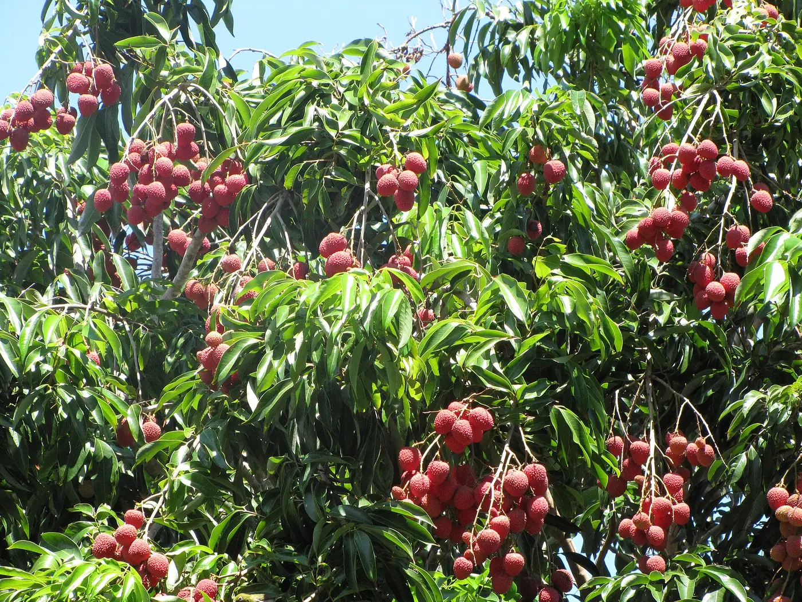
Vì sao có LEAF_AI
Lục Ngạn là vùng vải thiều lớn nhất cả nước, quả vải được xuất khẩu sang nhiều thị trường khắt khe về dư lượng thuốc. Những đợt mưa phùn, nồm ẩm khi cây ra lộc, ra hoa là lúc thán thư, sương mai bùng phát. Trong khi đó, vết bệnh do nấm và tổn thương do nhện lông nhung ở giai đoạn đầu khá giống nhau, dễ dẫn tới phun nhầm thuốc hoặc phun thừa “cho chắc”.
LEAF_AI giúp người trồng nhận ra bệnh ngay dưới tán vải, rồi đưa ra cách xử lý theo thứ tự an toàn của IPM.
- Chẩn đoán tại vườnChụp bằng điện thoại, không cần gửi mẫu đi xét nghiệm.
- Kết quả có giải thíchBản đồ nhiệt Grad-CAM cho thấy vùng lá AI dựa vào; khi hai bệnh cùng có xác suất cao, hệ thống cảnh báo nghi đồng nhiễm.
- Giảm thuốc hóa họcPhác đồ luôn bắt đầu từ canh tác và sinh học, đúng tinh thần nông nghiệp bền vững.
Hệ thống gồm những gì
- Máy chủ AIFastAPI chạy mô hình ResNet-18 huấn luyện trên ảnh lá vải, kèm Grad-CAM.
- Backend CloudXác thực Firebase Auth, lưu trữ lịch sử chẩn đoán, trợ lý kỹ sư AI dùng Gemini.
- Web app cài được (PWA)Thư viện bệnh và cẩm nang vẫn xem được khi mất sóng.
Mô hình ResNet-18 và Grad-CAM
Mạng ResNet-18 khởi tạo từ trọng số ImageNet, được tinh chỉnh trên ảnh lá vải để phân loại 5 bệnh, dịch hại và lá khỏe. Grad-CAM tạo bản đồ nhiệt từ tầng tích chập cuối để giải thích từng kết quả.
| Thông số | Giá trị |
|---|---|
| Kiến trúc | ResNet-18 (PyTorch), tinh chỉnh toàn bộ mạng |
| Lớp nhận diện | Thán thư, sương mai, cháy lá, đốm rong, nhện lông nhung, lá khỏe |
| Ảnh đầu vào | 224 × 224 px |
| Giải thích kết quả | Grad-CAM tại tầng layer4 |
| Cảnh báo nghi đồng nhiễm | Lớp thứ nhất ≥ 50% và lớp thứ hai ≥ 25% |
| Độ chính xác | Xem báo cáo kết quả nghiên cứu của dự án |
Nguồn tham khảo
- FAO, The Lychee Crop in Asia and the Pacific (Menzel, 2002)Kỹ thuật canh tác và sâu bệnh hại chính trên cây vải.
- Bộ Nông nghiệp và PTNT, QCVN 01-38:2010/BNNPTNTPhương pháp điều tra phát hiện dịch hại cây trồng.
- He và cộng sự (2016); Selvaraju và cộng sự (2017)Kiến trúc ResNet và phương pháp giải thích Grad-CAM.
Nguồn hình ảnh
Ảnh cây vải, quả vải trên website được lấy từ Wikimedia Commons theo giấy phép Creative Commons, đã thu nhỏ để tải nhanh. Ảnh minh họa bệnh và bản đồ nhiệt do nhóm dự án thực hiện.
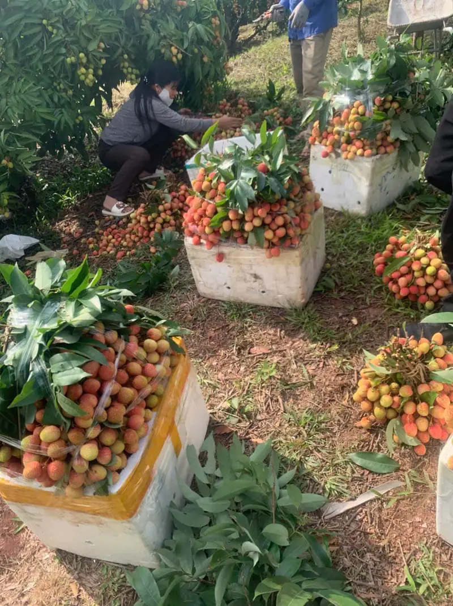
Nhà vườn thu hoạch và đóng thùng vải thiềuTác giả: Onyen12001uhuewm · CC BY-SA 4.0 · Wikimedia Commons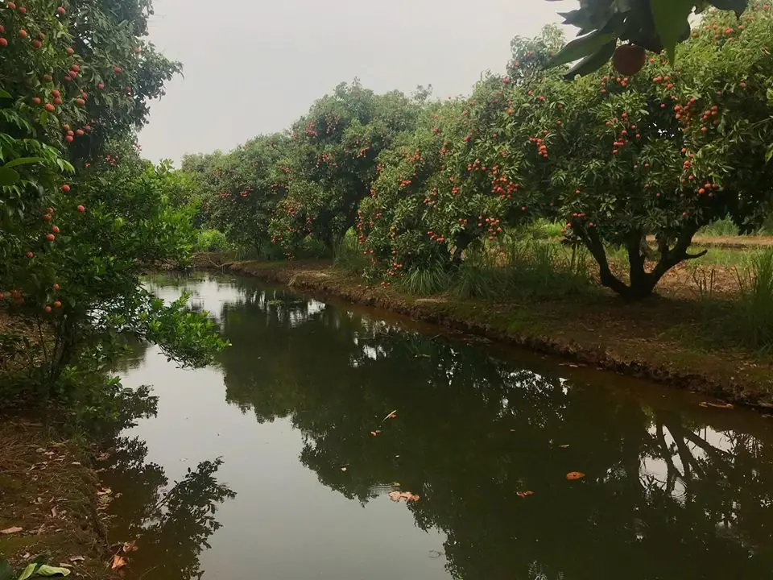
Vườn vải thiều xanh tốt ven kênhTác giả: Khaivuhd · CC BY-SA 3.0 · Wikimedia Commons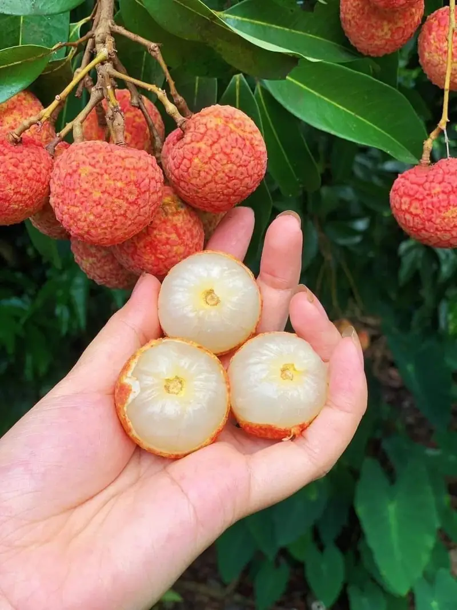
Quả vải thiều chín đỏ, cùi trắng dàyTác giả: Anhthu62558 · CC BY-SA 4.0 · Wikimedia Commons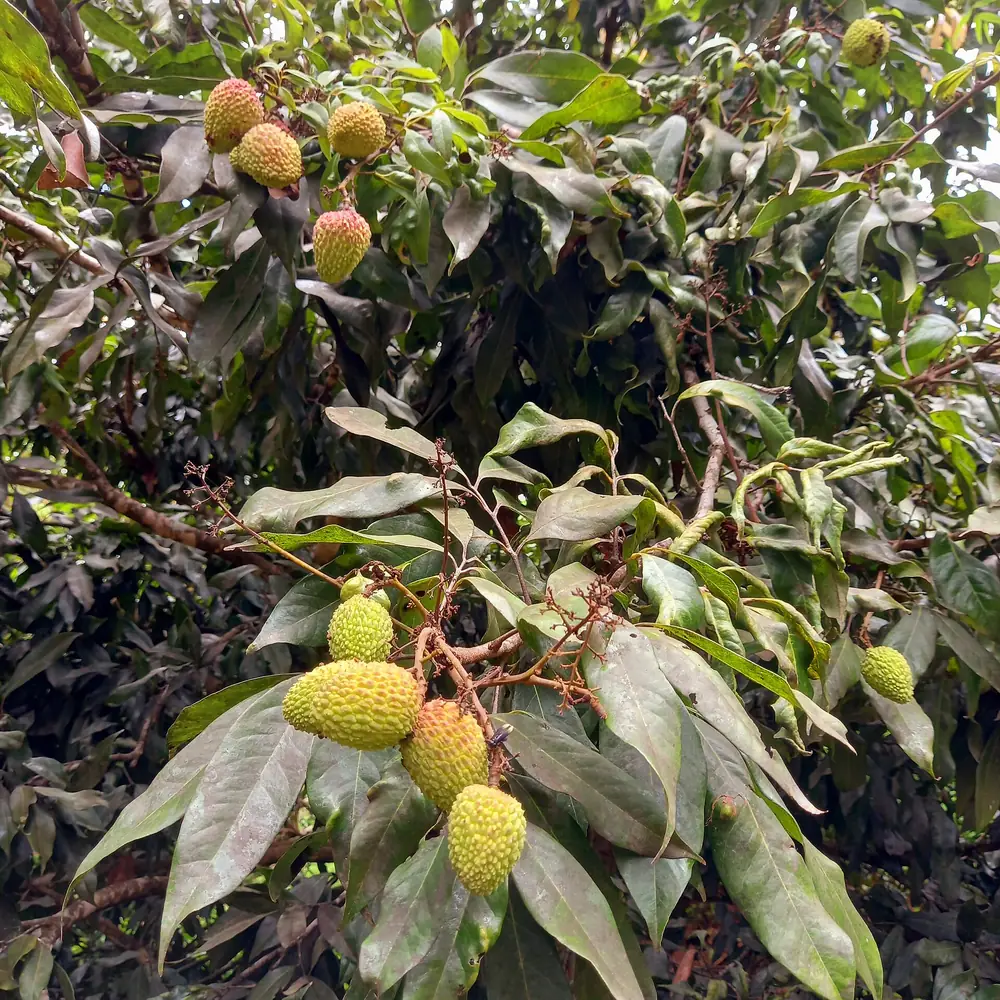
Chùm quả vải non trên cànhTác giả: Just a Brazilian man from Brazil · CC BY 2.0 · Wikimedia Commons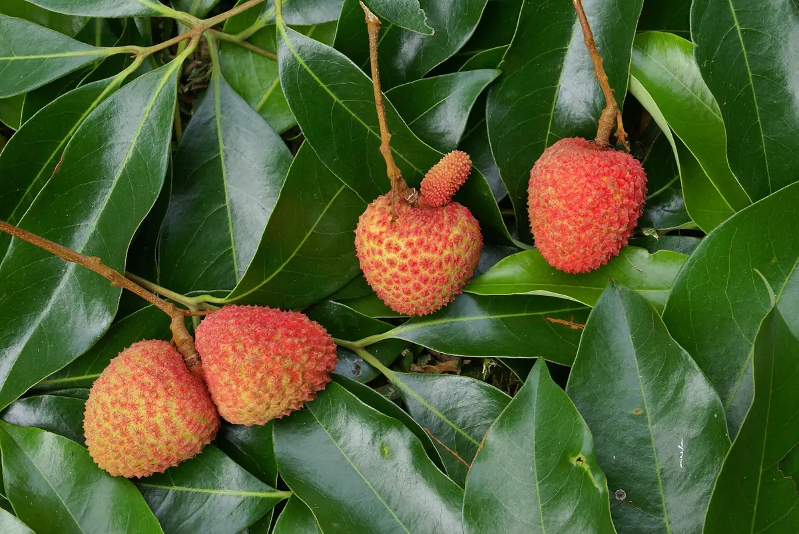
Quả vải chín giữa tán lá xanh bóngTác giả: B.navez · CC BY-SA 4.0 · Wikimedia Commons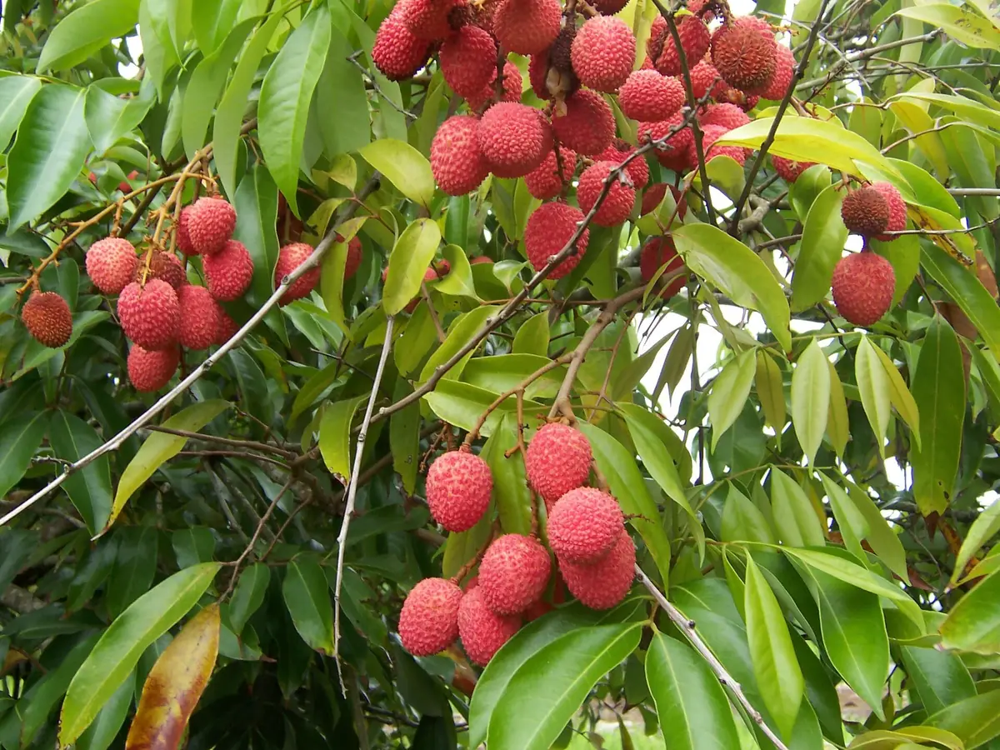
Chùm vải chín đỏ trĩu cànhTác giả: B.navez · CC BY-SA 3.0 · Wikimedia Commons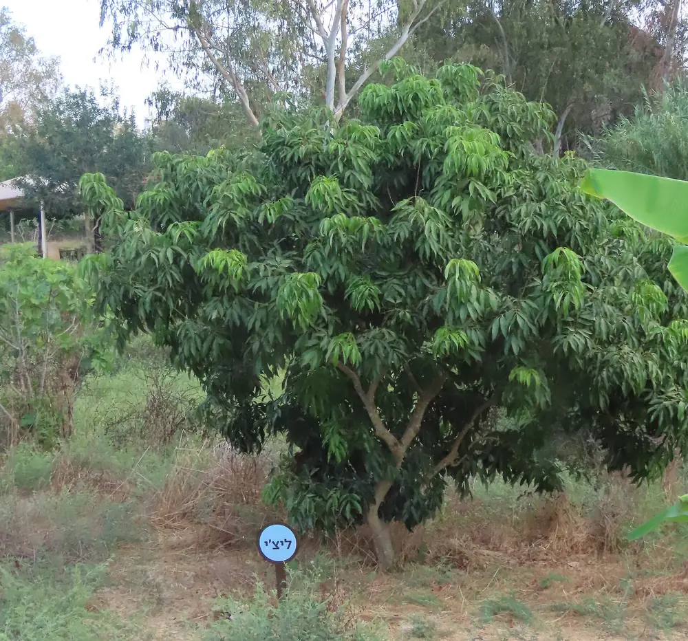
Một cây vải đang sinh trưởngTác giả: יעקב · CC0 · Wikimedia Commons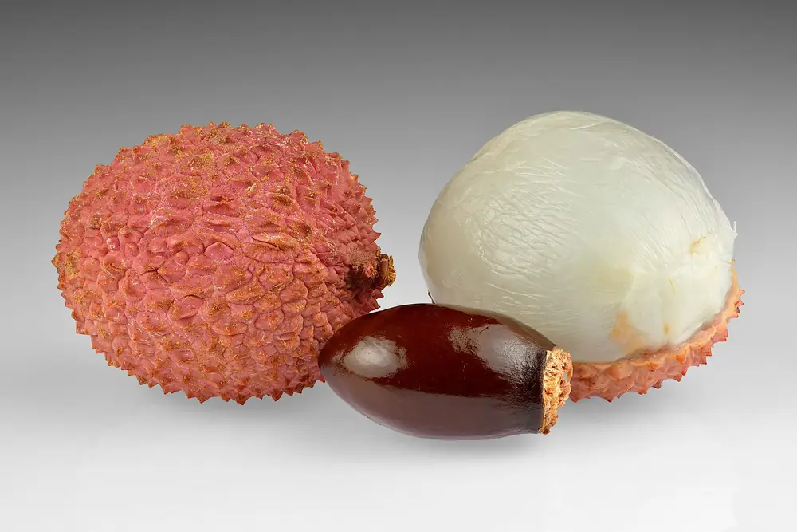
Cấu tạo quả vải: vỏ, cùi và hạtTác giả: Ivar Leidus · CC BY-SA 4.0 · Wikimedia Commons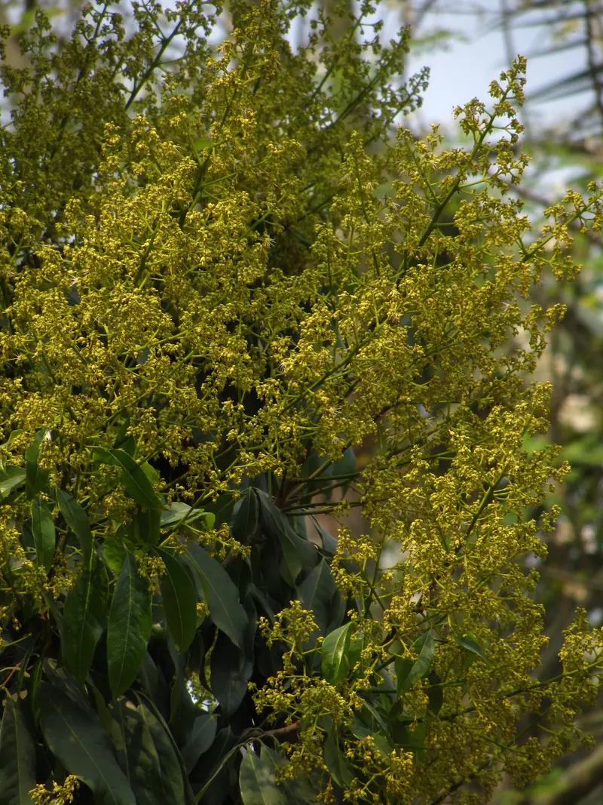
Chùm hoa vải nở rộ đầu mùaTác giả: Leatherbrenn darby · CC BY-SA 4.0 · Wikimedia Commons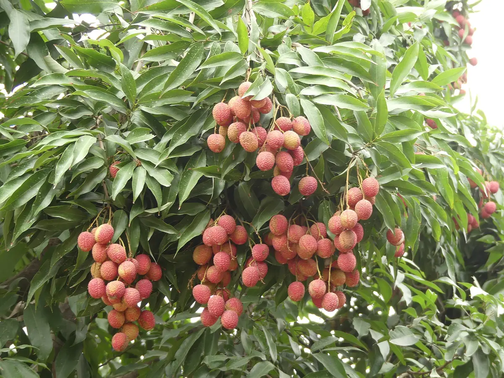
Cây vải sai quả vào chính vụTác giả: A. J. T. Johnsingh, WWF-India and NCF · CC BY-SA 4.0 · Wikimedia Commons- Tán vải phủ kín quả chín vào mùa thu hoạchTác giả: Forest and Kim Starr · CC BY 3.0 us · Wikimedia Commons
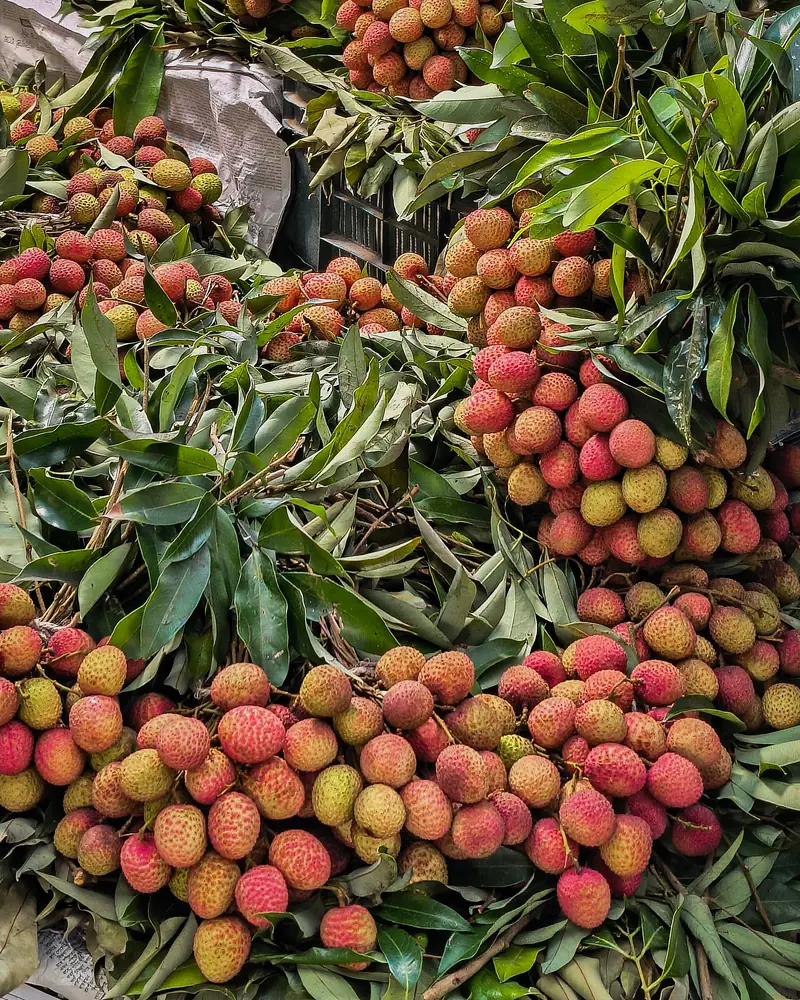
Những bó vải tươi còn nguyên láTác giả: Tanvir Rahat · CC BY-SA 4.0 · Wikimedia Commons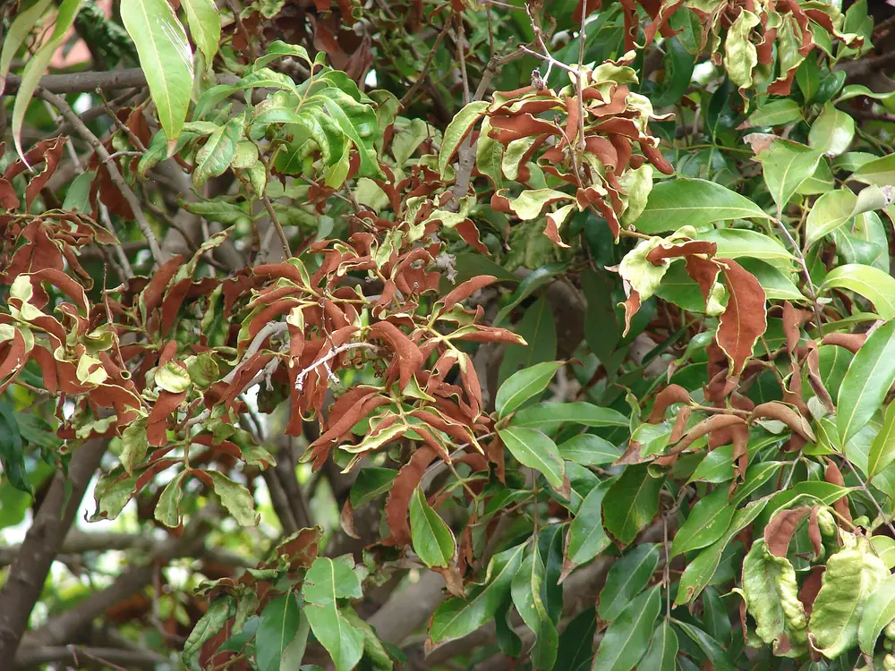
Lá vải bị nhện lông nhung gây hại (ảnh thực tế)Tác giả: Forest and Kim Starr · CC BY 3.0 us · Wikimedia Commons